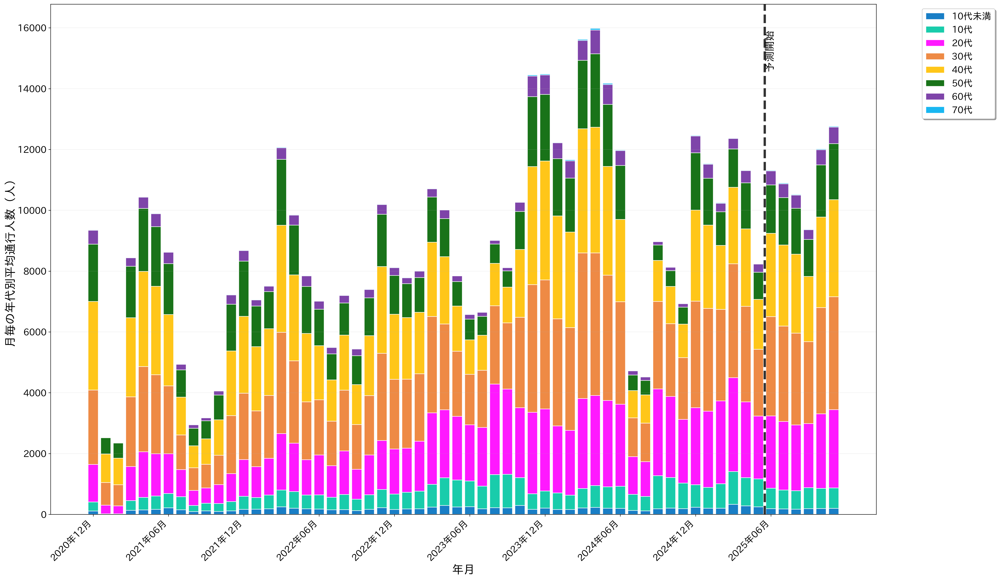

最新月 総通行人数
8,242人
2025年05月実績
予測期間 平均通行人数
11,149人
2025年6月〜2026年5月
データ期間
60ヶ月
実績54ヶ月 + 予測6ヶ月
東康生通り１ 年代別通行人数の推移

グラフ説明: 積み上げ棒グラフで年代別通行人数を表示。黒い破線より左が実績データ、右が予測データ。
可視化データについて:
・QURUWA地区の人流データを用いて可視化しています。
・表示されているグラフは、一部の欠損と補間されたデータを含んでおり、事実と異なる可能性がございます。
・本資料は機械学習に基づく予測であり、将来の状況を正確に保証するものではありません。